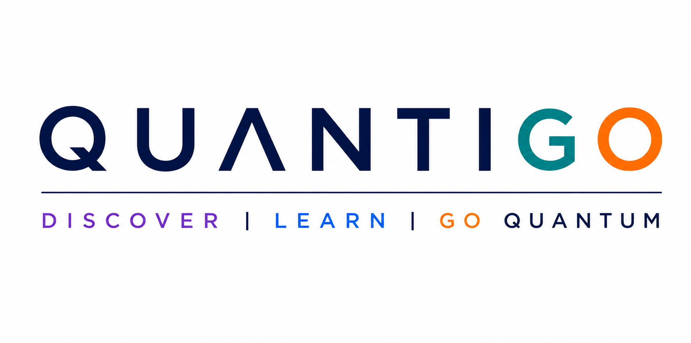
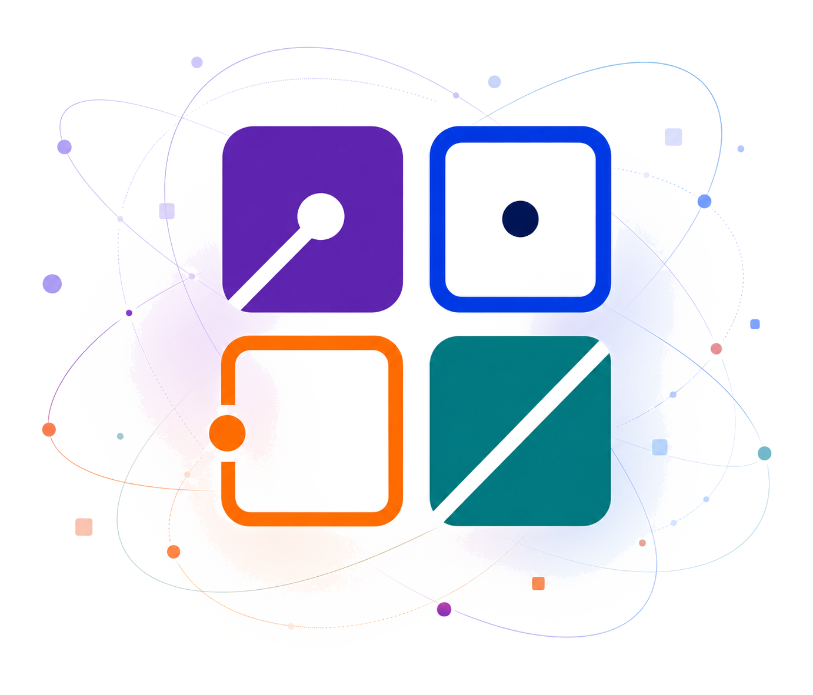

DISCOVER
Lasciati guidare alla scoperta del quantum computing e delle idee che stanno cambiando il mondo del calcolo.

Una scuola immersiva rivolta agli studenti delle scuole superiori e dei primi anni universitari STEM, per scoprire l’informatica quantistica, incontrare giovani ricercatori e immaginare il futuro del calcolo.

Lasciati guidare alla scoperta del quantum computing e delle idee che stanno cambiando il mondo del calcolo.
Acquisisci una comprensione solida e intuitiva dei concetti fondamentali grazie a un percorso progressivo e accessibile.
Partecipa a lezioni, dimostrazioni e momenti interattivi per sperimentare il quantum computing in prima persona.
Guarda oltre il presente e scopri come il quantum computing potrà aprire nuove opportunità di studio e di carriera.
Dai qubit ai fenomeni quantistici: le idee fondamentali rese intuitive.
Algoritmi, interferenza e vantaggio quantistico attraverso esempi accessibili.
Programma, simula ed esegui semplici circuiti con strumenti reali.
Scopri le potenziali applicazioni e il possibile impatto sulla società.
Conosci persone, percorsi universitari e opportunità nel mondo quantum.
Quattro giornate costruite come un percorso di scoperta: dalle idee fondamentali del quantum computing alle sue applicazioni più affascinanti, alternando ispirazione, approfondimento e momenti di confronto.
Alla scoperta dei computer quantistici e dei qubit.
Le idee dietro gli algoritmi quantistici.
Come un programma prende vita su un computer quantistico.
Come la meccanica quantistica protegge le informazioni.
Costruzione di circuiti, simulatori, hardware reale e una sessione hands-on guidata.
Applicazioni, cybersecurity, AI, hardware, ricerca e opportunità di studio e carriera.
Quantigo è progettato per accompagnare studenti con esperienze diverse nella scoperta del quantum computing, offrendo contenuti accessibili, stimolanti e adeguati al livello di preparazione di ciascuno.
Studenti degli ultimi anni delle scuole secondarie superiori, interessati alla matematica, all’informatica, alla fisica e, più in generale, alle sfide scientifiche e tecnologiche del futuro.
Studenti dei primi anni dei corsi in Informatica, Matematica, Fisica, Ingegneria e discipline affini, interessati a comprendere i principi del quantum computing e il suo impatto sulle tecnologie del futuro.
Quantum Algorithms
Quantum Information
Quantum Software
Quantum Hardware
Quantum Applications
No. Quantigo è pensato per essere accessibile anche a chi non ha alcuna esperienza di quantum computing. Non sono richieste conoscenze specifiche di fisica quantistica o di informatica quantistica: è sufficiente avere curiosità e interesse per le discipline scientifiche e tecnologiche. Le lezioni partiranno dai concetti fondamentali, presentati con un approccio divulgativo, intuitivo e ricco di esempi, per poi guidare progressivamente i partecipanti verso una comprensione più profonda dei principi, degli algoritmi e delle applicazioni del calcolo quantistico. Gli approfondimenti saranno introdotti in modo graduale, così da permettere a tutti di seguire il percorso e apprezzare le idee che stanno alla base di una delle tecnologie più promettenti del prossimo futuro.
Sì. La partecipazione a Quantigo è completamente gratuita. Per motivi organizzativi è però richiesta la registrazione e i posti sono limitati. Per favorire la partecipazione del maggior numero possibile di istituti, sarà riservato un numero massimo di posti per ciascuna scuola superiore. Anche gli studenti universitari potranno registrarsi liberamente, fino a esaurimento dei posti disponibili. Le modalità e le tempistiche di iscrizione saranno comunicate sul sito nelle prossime settimane.
Sì. Quantigo prevede il rilascio di un attestato di partecipazione per tutti coloro che completeranno con successo il percorso formativo. A conclusione di ciascun mini-corso sarà proposto un breve test di verifica, pensato per consolidare gli argomenti trattati e accompagnare i partecipanti verso una comprensione sempre più approfondita del quantum computing. Il superamento di tutti i test costituisce il requisito per il rilascio dell’attestato finale.
Sì. Tutte le lezioni e le attività di Quantigo saranno svolte in italiano, così da garantire un’esperienza accessibile e coinvolgente per tutti i partecipanti. Eventuali termini tecnici in lingua inglese, di uso comune nel mondo del quantum computing, saranno introdotti e spiegati durante il percorso.
Registrati e Scopri la tecnologia che sta cambiando il futuro.